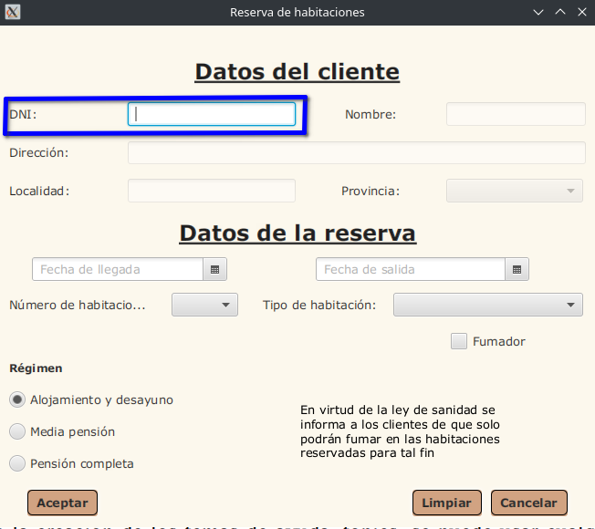
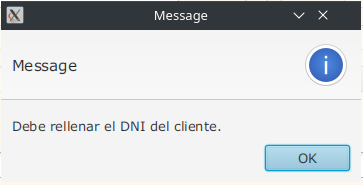
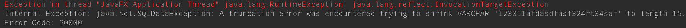

Campo DNI

Funcionamiento del Campo DNI:
El campo DNI es el que hay que rellenar primero, una vez se rellena los demás campos se activan para rellenar, cuando el campo del DNI se rellena y pierde el foco el programa se encarga de comprobar si el usuario estaba previamente registrado en la base de datos; si está registrado rellena los campos que ya tiene y si no los activa para rellenar.
Tooltip del Campo DNI:
Cuando se coloca el puntero del ratón sobre el Campo DNI, aparece un mensaje que pone “Introduce dni”.
El Campo DNI no admite:
- Dejarlo Vacío.
- Más de 15 letras.
Mensajes de Error del Campo Dni:
Si está vacío:

Si hay más de 15 letras:
